Префектура Нара · Ямадзоэ и Сони · напитки
Крафтовая кола Нары: имбирь мёга из Ямадзоэ и лекарственные травы из Сони
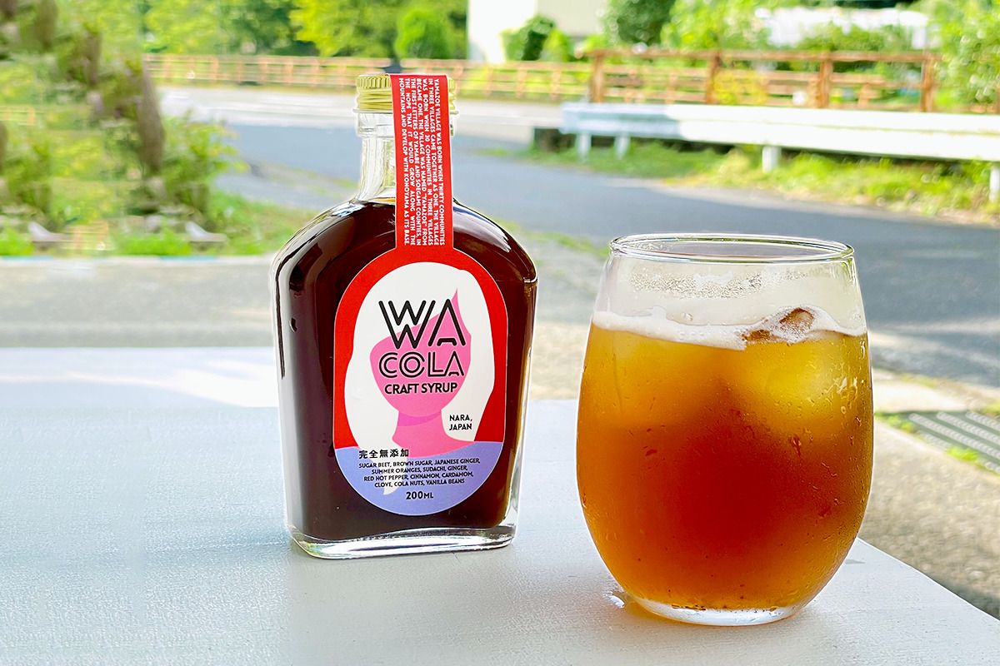
Крафтовая кола стала в Японии модным безалкогольным напитком, и в каждой местности её варят по-своему, из своих продуктов. Две деревни на востоке префектуры Нара сделали из колы рассказ о себе: одна о пряном имбире мёга, другая о лекарственных травах, которые собирали здесь ещё в древности.
Ямадзоэ
Кола, которая началась с мёги
Деревня Ямадзоэ лежит на северо-востоке префектуры Нара, на плато Ямато у границы с префектурой Миэ. Лето здесь прохладное, зима суровая, а над деревней поднимается гора Коно, охраняемая префектурой как живописное место. Природы и земли вокруг много, а людей становится всё меньше: к 2022 году в деревне жило около 3000 человек.
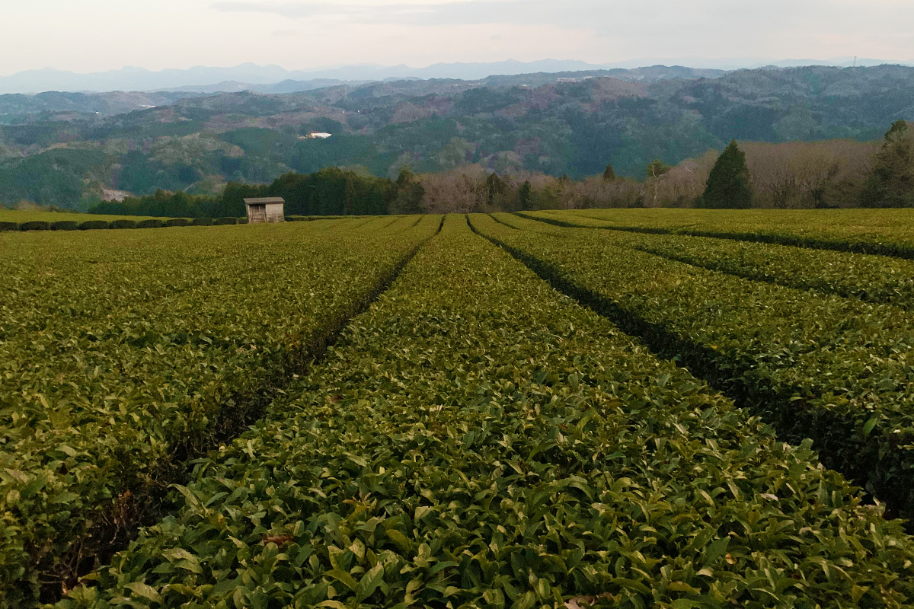
Синго Оя вместе с семьёй держал в деревне маленький продуктовый магазин, открытый около ста лет назад. Он изучал местный туризм и то, как деревне заявить о себе, но долго не находил идеи, которая подошла бы именно Ямадзоэ. Подсказка пришла с огорода, которого не было. Однажды мать принесла домой целую охапку мёги, японского имбиря, и оказалось, что он просто растёт сам по себе прямо во дворе. Позже выяснилось, что мёга входит в число традиционных овощей префектуры и в горах Нары растёт повсюду. Обычно её используют только как приправу, и Синго Оя решил найти ей другое применение.
Как раз тогда в моду входили моктейли и жизнь без алкоголя, и он познакомился с крафтовой колой. После долгих проб получился вкус, которым он остался доволен, и так появилась WA COLA.
Название
Пять смыслов слова «ва»
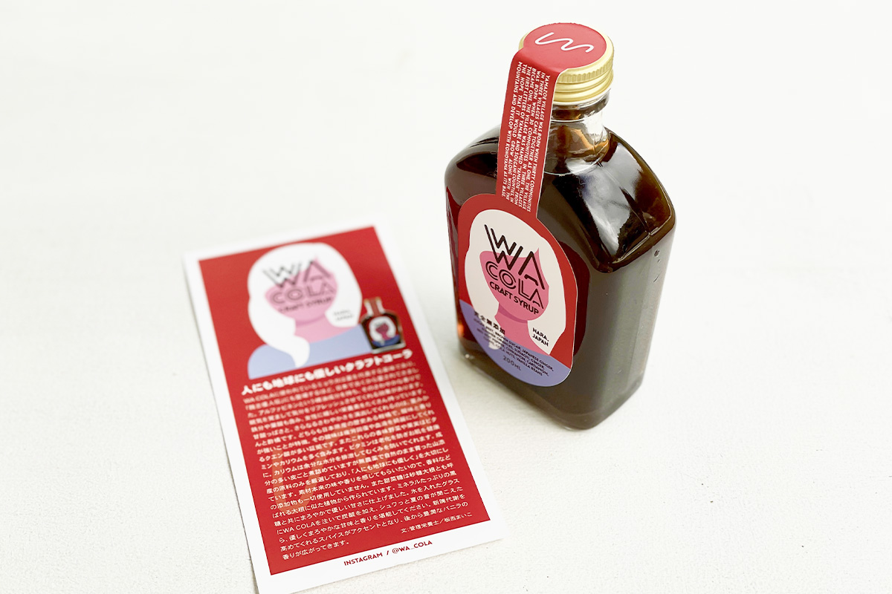
Японское «ва» можно записать разными иероглифами, и в названии колы спрятаны сразу пять значений. «Ва» это древнее имя Японии и самой земли Ямато, где кола родилась. «Ва» это всё японское, родное. Ещё «ва» означает круговорот, по которому местные продукты расходятся по деревне и за её пределы, и круг людей, который вокруг этого собирается и оживляет горную округу. Последнее «ва» значит «разговор»: автор хочет, чтобы история тех, кто делает колу, стала поводом поговорить.
Мёга в Японии летняя приправа с долгой историей: о ней упоминает китайская хроника III века о жителях японских островов. В мёге есть эфирное масло альфа-пинен, и её свежий запах прогоняет сонливость и бодрит. Есть в ней и железо, и фолиевая кислота.
Кисло-сладкий вкус и ещё больше свежести дают нацумикан и судати, два старинных японских цитруса с резкой кислинкой и сильным ароматом. Все травы и плоды для WA COLA растут в Ямадзоэ без пестицидов. Их уваривают вместе с кожурой, где больше всего полезных веществ, а ароматизаторы и другие добавки не добавляют вовсе, чтобы чувствовался вкус самих продуктов.
С сахаром тоже всё продумано. Для сиропов крафтовой колы обычно берут тростниковый сахар, а здесь взяли свекловичный, богатый минералами: так ярче звучит аромат мёги. Вместе с чёрным сахаром он даёт мягкую, округлую сладость.
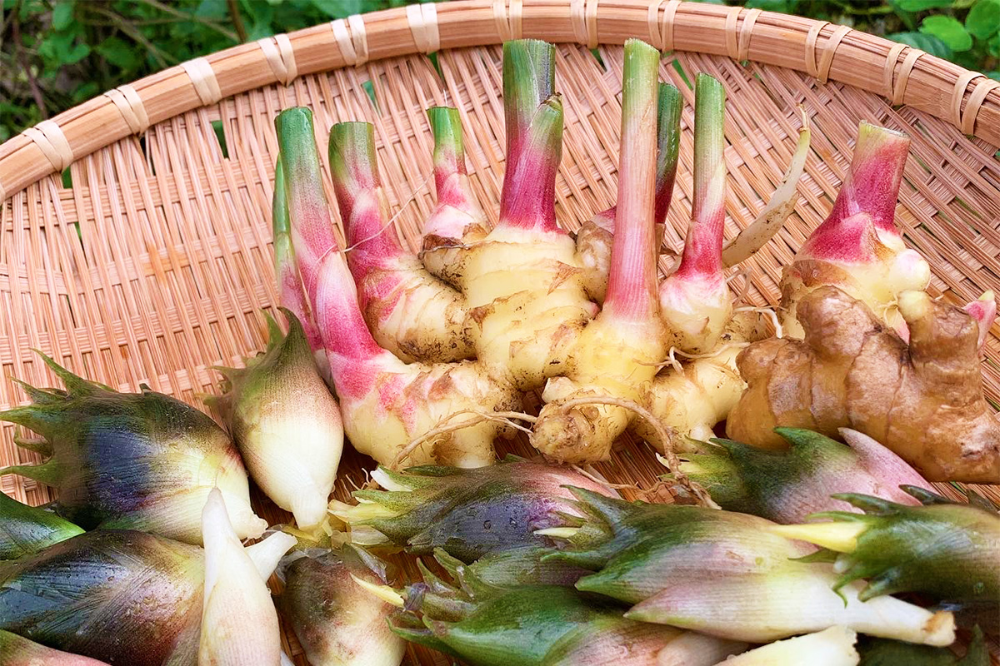
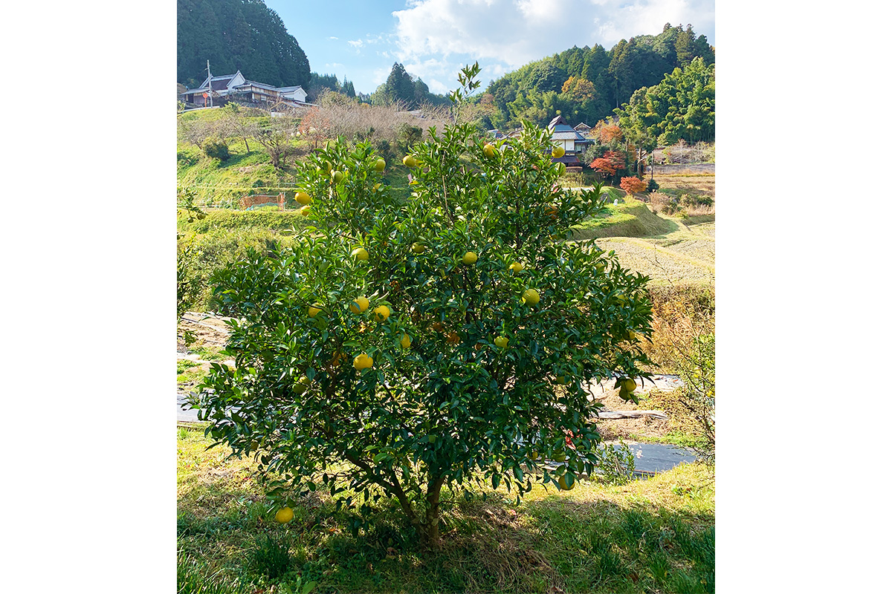
Сироп наливают в стакан со льдом и доливают газированной водой. Когда напиток зашипит, сначала чувствуется мягкая сладость и свежий аромат, потом пряности, а в конце раскрывается густой запах ванили. Сироп можно развести горячей водой, смешать с виски для хайбола, полить им колотый лёд или йогурт: так аромат мёги слышен лучше всего. Даже форма стакана и соломинка меняют впечатление.
WA COLA
- Цены / Вход
- 2200 иен за 200 мл (2022 год); продаётся, пока не закончится партия сезона
Сони
YAMATO COLA: кола из земли лекарственных трав
Деревня Сони стоит на самом северо-востоке префектуры, и живёт в ней около 1300 человек. Вокруг поднимаются скалистые вершины и стены из столбчатых скал, редкое природное образование, охраняемое государством как памятник природы. На востоке деревни лежит плато Сони, часть квазинационального парка Муро-Акамэ-Аояма и одно из самых известных горных мест отдыха в районе Кансай.
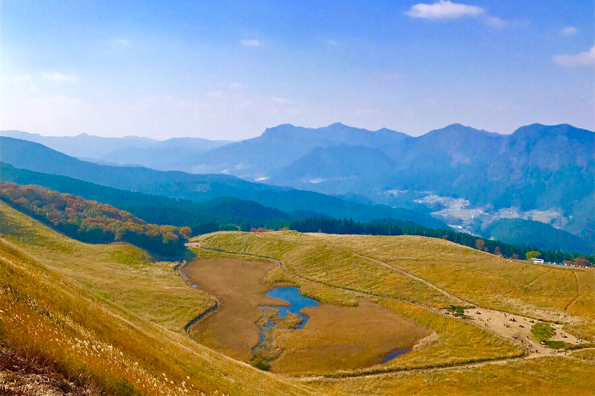
Сони входит в район Уда, который называют местом, где в Японии начались лекарства. В летописи «Нихон сёки», законченной в 720 году, записано, что здесь впервые прошла «кусуригари», древняя охота за лечебными травами, и что эти угодья служили двору. Сони и сейчас один из главных центров выращивания лекарственных растений в стране. Здесь растят ямато-токи, растение из семейства зонтичных, корень которого идёт в средства традиционной медицины кампо. Дешёвое сырьё из-за рубежа сократило посадки, и под вопросом оказалось само их будущее.
Сохранить травяную культуру деревни взялся один из её жителей. Он понимал, что, пока ямато-токи остаётся только сырьём для кампо, дело не выживет, и решил делать из него готовые продукты. Но пиво, чай и мыло из трав уже выпускали соседние муниципалитеты, и долго не удавалось придумать что-то своё.
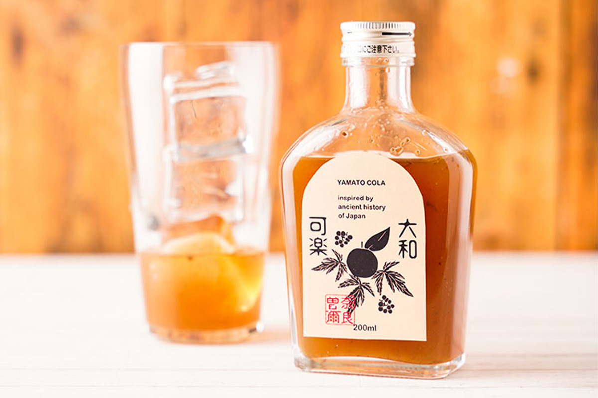
«Я искал идею и узнал о крафтовой коле. Сразу понял: вот оно»
создатель YAMATO COLA
Кола похожа на карри: если держать основу, туда можно положить что угодно, и она останется колой. Значит, старинные травы Сони можно превратить в колу и рассказать о деревне многим людям. Работа шла под тремя девизами: принять дары природы, которые передаются с древности; сплести воедино мысли жителей и их надежды на будущее деревни; связать с сегодняшним днём историю Сони, которая тянется со времён «Кодзики», свода мифов 712 года. После многих проб, кроме ямато-токи, в колу вошли татибана, особый цитрус префектуры, и плоды кихады, амурского бархата, тоже издавна известные в этих местах.
Вкус
Цитрусы и травы в одной бутылке
YAMATO COLA ломает привычное представление о коле: это напиток, бережный к телу, после которого не мучает совесть. Характер старинных цитрусов и трав Ямато в ней сохранён полностью. В составе больше 15 пряностей, среди них ямато-татибана, исконный японский дикий цитрус, который считают самым древним в стране, и традиционные лекарственные травы: ямато-токи и плоды кихады. Ямато-токи и кихада выращены в Сони, татибана в префектуре Нара.
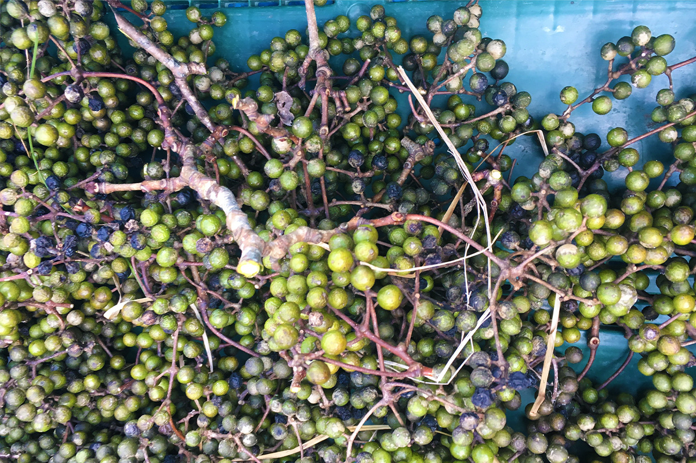
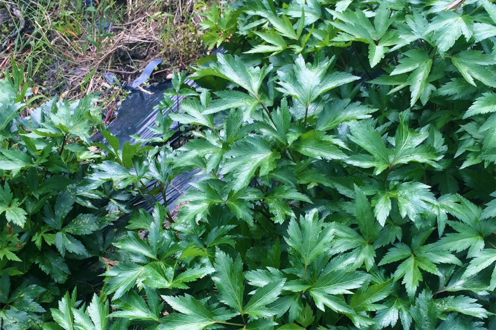
Сироп лучше всего разводить газированной водой. Освежает он как настоящая кола, а травяной аромат уходит в нос и не отпускает. Вкус зависит от того, насколько созрела татибана, когда её собрали и когда выкопали ямато-токи, поэтому у каждой партии свой вкус, которого больше не будет. В этом и есть прелесть крафтового напитка.
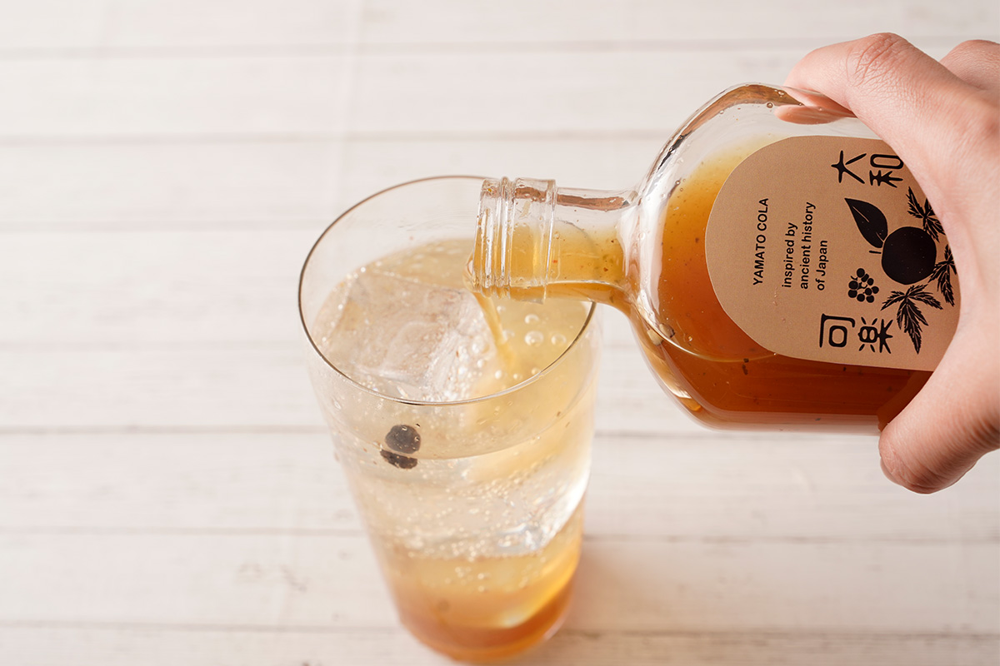
За этой колой стоит желание сохранить культуру и историю деревни, которые уходят. Об этом приятно думать, когда пьёшь холодный шипящий стакан.
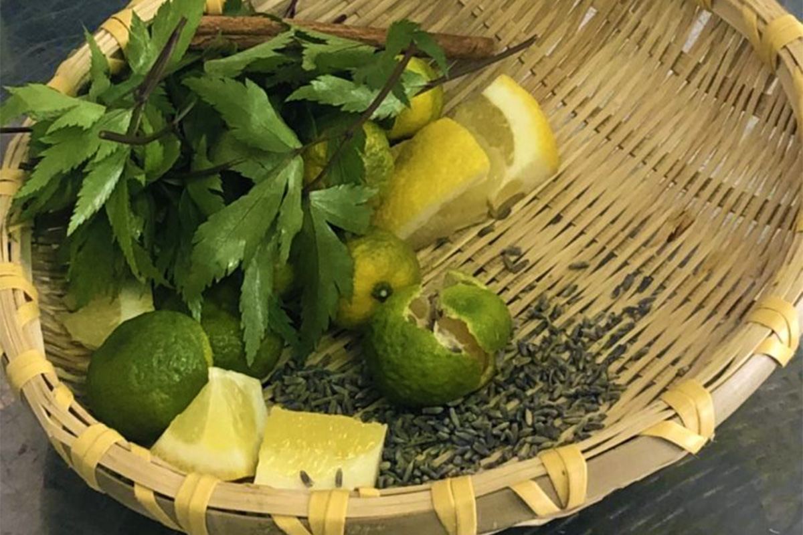
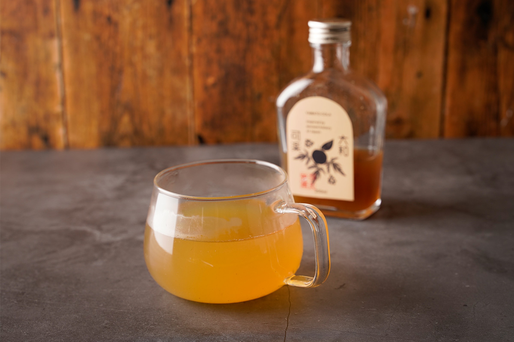
YAMATO COLA
- Цены / Вход
- 1600 иен без налога за 200 мл, 3300 иен без налога за 720 мл (2022 год)